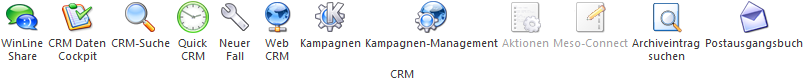

Im CRM-Ribbon sind die wichtigsten Punkte vom WinLine CRM zusammengefasst.
Ø WinLine Share
Durch Anwahl des Buttons "WinLine Share" wird der Social Collaboration-Part (englisch für "gemeinsame und vernetzte Zusammenarbeit") der WinLine geöffnet.
Ø CRM Daten Cockpit
Im CRM Daten Cockpit können alle Listen, die im WinLine LIST erstellt werden, ausgewertet werden. Dazu stehen weitere Funktionen wie Datenexport und Import (für Stammdaten) zur Verfügung.
Ø CRM-Suche
Über die CRM-Suche können Suchanfragen innerhalb des CRM (Aktionen und Workflows) durchgeführt werden.
Ø Quick CRM
Wenn dieser Button angeklickt wird, kann ein CRM-Fall zu dem gerade geöffneten Datensatz erfasst werden. Voraussetzung dafür ist:
ü Es muss eine gültige CRM-Lizenz vorhanden sein.
ü Der Benutzer muss ein CRM-Benutzer sein.
ü Es müssen entsprechende CRM-Aktionen bzw. CRM-Workflows mit der Kennzeichnung "QUICK CRM" angelegt sein.
Hinweis
Es werden im WinLine Standard 9 CRM-Aktionen (CRM-Gruppe "100") mitgeliefert.
Ø Neuer Fall
Mit diesem Button kann ein neuer CRM-Fall angestoßen werden, auch unabhängig von einem aufgerufenen Datensatz.
Ø Web CRM
Über diesen Button kann eine spezielle (WEB)-Ansicht der Konteninformation aufgerufen werden.
Ø Kampagnen
Über diesen Button gelangt man in das Fenster "Kampagnen", von wo aus weitere Aktionen (z.B. Mail- oder Briefversand) initiiert werden können.
Ø Kampagnen-Management
Über das "Kampagnen-Management" können Kampagnen mit mehreren Arbeitsschritten abgewickelt werden.
Ø Aktionen
Wenn der CRM-Ribbon im Zusammenhang mit Stammdatensätzen aufgerufen wird, dann steht der Button "Aktionen" zur Verfügung. Durch Anwahl wird ein Kontextmenü geöffnet, in dem verschiedene Aktionen zur Verfügung stehen, die für den Stammdatensatz ausgeführt werden können.
Ø Meso-Connect
Wenn der CRM-Ribbon im Zusammenhang mit Stammdatensätzen aufgerufen wird, dann steht der Button "Meso-Connect" zur Verfügung. Durch Anwahl wird ein Kontextmenü geöffnet, in dem verschiedene Meso-Connect-Aktionen zur Verfügung stehen, die für den Stammdatensatz ausgeführt werden können.
Ø Archiveintrag suchen
Über diesen Button kann das Programm "Archiveintrag suchen" aufgerufen werden kann.
Ø Postausgangsbuch
Mit Hilfe des Postausgangsbuchs können Serienbriefe, -mails oder -faxe verwaltet und ausgegeben werden.